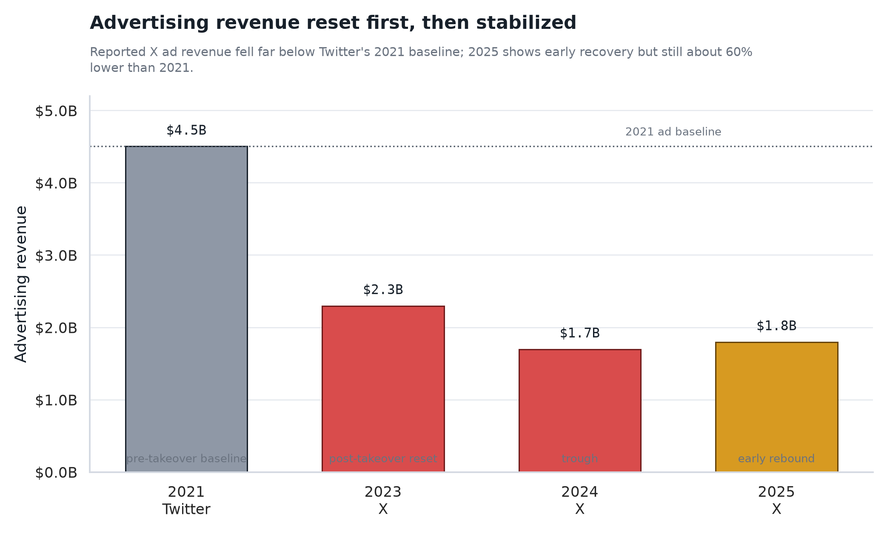
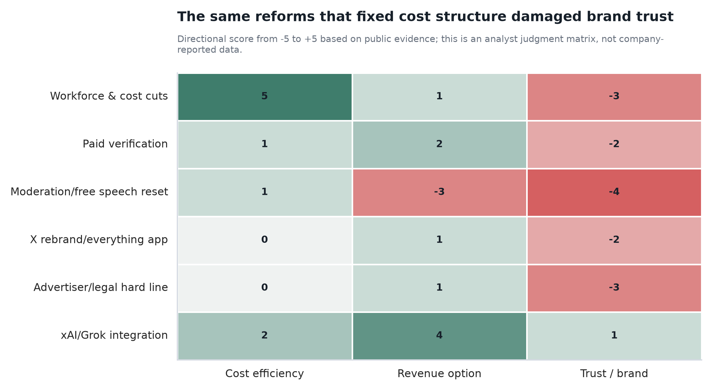
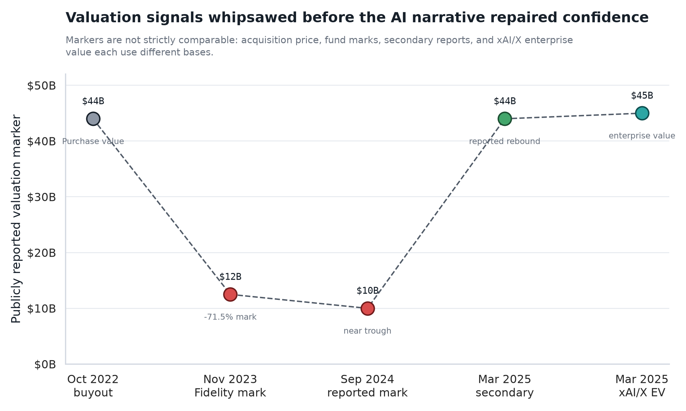
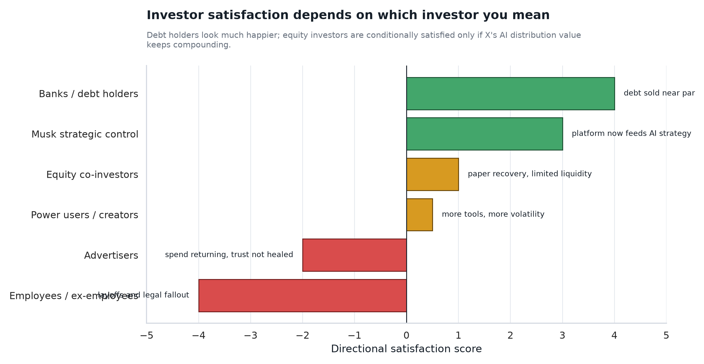

收购价格
$44B
2022 年 10 月完成私有化交易。
Deep Research Report · Public data through June 28, 2026
结论不是简单的“成功”或“失败”：马斯克用极端成本手术、产品重构、内容治理重置和 AI 绑定，把 Twitter 从广告驱动的社交公司，改造成一个高波动的 AI 分发与数据资产。但广告收入与品牌信任仍未回到 Twitter 时代。
Executive Summary
X 的关键变化在于：成本从“上市公司规模”被切到“创始人控制型极简组织”，收入从广告单核转向广告、订阅、创作者、数据和 AI 分发的组合叙事。
裁员、办公成本、云服务、合同和福利支出被快速压缩，这让 X 更可能活下来，也让债务市场恢复信心。
内容治理重置、品牌安全争议和马斯克本人言论使大品牌撤退，广告收入从 Twitter 时代明显下台阶。
2025 年 xAI 与 X 的合并把投资叙事改写为“社交图谱、实时数据、Grok 分发和 AI 产品入口”。
银行和债权人明显好转；股权投资人从亏损焦虑转向 AI 期权；广告主和员工群体的满意度仍偏低。
Timeline
这条时间线说明，X 的价值判断已经不能只按社交广告公司看。2024 年之前是止血，2025 年之后是把 X 放进 Musk AI 体系里重新估值。
接管裁员
10 月完成 $44B 收购后，快速解除高管、缩减团队、重审合同，并推出付费认证尝试。
信任冲击X 品牌
员工规模降至约 1,500；蓝 V 认证改为付费；传统 Twitter 品牌在 7 月更名为 X；广告主关系承压。
估值低谷产品迭代
广告收入继续低位，Fidelity 等投资标记显示估值承压；平台推进视频、创作者收入、长文、支付和 Grok 入口。
估值修复xAI 合并
X 被并入 xAI，外部估值叙事修复；Linda Yaccarino 离任强化了“广告 CEO 模式”退场的信号。
广告企稳债务改善
公开披露显示 2025 广告收入较 2024 年回升，但远低于 2021 年；X 债务接近面值转售，资本市场信心改善。
Major Reforms
改革并非单点动作，而是一组互相强化的改变：裁员给成本兜底，认证和订阅寻找新收入，内容治理改变平台文化，xAI 则重写估值框架。
| 改革动作 | 具体改变 | 想解决的问题 | 现在看到的结果 | 判断 |
|---|---|---|---|---|
| 组织与成本重构 | 大规模裁员、削减办公室/福利/合同支出、提高工程团队密度。 | 解决交易后高债务压力和 Twitter 长期亏损/低效率问题。 | 成本端显著改善，平台仍运行；但组织记忆、合规、信任与稳定性付出代价。 | 财务有效 |
| 付费认证与订阅 | 蓝 V 从身份认证转为付费权益，叠加长文、视频、创作者工具。 | 降低广告依赖，把高活跃用户变成直接付费收入。 | 形成补充收入，但未证明能替代广告；早期冒名和信任问题损伤品牌。 | 收入有限 |
| 内容治理重置 | 恢复部分被封账号，强调言论自由，减少部分内容审核约束。 | 提升政治/文化话题活跃度，强化马斯克个人理念与平台差异化。 | 讨论热度高，但广告主品牌安全担忧加重，是收入下台阶的关键因素之一。 | 品牌受损 |
| Community Notes | 扩大社区众包事实核查，用跨立场共识标注误导内容。 | 用更低成本的机制替代中心化审核，缓和错误信息争议。 | 成为 X 的正面产品资产，但不足以单独修复广告主信任。 | 机制资产 |
| 品牌从 Twitter 改为 X | 抛弃小鸟标识和 Twitter 品牌，转向“Everything App”愿景。 | 摆脱旧社交网络定位，给支付、视频、AI、创作者经济留空间。 | 战略空间更大，但丢掉了全球罕见的动词级品牌资产。 | 长期下注 |
| API、数据和开发者生态 | 提高 API 价格、限制免费数据访问，控制外部模型和开发者抓取。 | 把实时社交数据变成可收费资产，并保护 AI 训练价值。 | 数据资产货币化潜力提高，但开发者生态和第三方工具受损。 | 双刃剑 |
| xAI/Grok 深度绑定 | Grok 成为 X 内的 AI 助手与内容入口，X 在 2025 年并入 xAI。 | 把实时社交数据、分发网络和 AI 产品闭环绑定。 | 成为估值修复的最大叙事来源；但商业化仍需验证。 | 战略修复 |
| 广告主强硬路线 | 对撤资广告主公开施压，后续采取诉讼等更强硬策略。 | 阻止广告主集体撤退，改变议价关系。 | 短期有威慑和话题效应，但对品牌关系修复并不温和。 | 关系高压 |
Operating Results
最重要的公开数字是广告收入：2025 年有回升，但离 Twitter 2021 年的广告收入仍有巨大差距。这说明 X 的底部修复和完整复兴不是一回事。


成本：大概率已经被结构性压低。Twitter 2021 年是 7,500+ 员工的上市公司形态，X 在 2023 年进入约 1,500 人级别的精简组织。
收入：广告收入从 Twitter 时代明显下台阶，2025 年企稳是积极信号，但不足以证明广告飞轮完全修复。
产品：发布速度更快，视频、长文、订阅、创作者收入和 Grok 入口更密集。但这也伴随功能稳定性、品牌安全和平台治理争议。
领导结构：Yaccarino 离任后，X 更像 Musk/xAI 体系的一部分，而不是独立广告媒体公司。
Investor Satisfaction
把投资人混在一起看会误判。银行关心债务能不能卖出去，股权投资人关心估值能不能回来，马斯克关心 X 能不能服务 AI 和更大生态。


银行和债权人：更满意。X 债务能接近面值转售，说明市场对偿付和资产价值的担忧明显下降。
早期股权投资人：从不满意转向有条件满意。Fidelity 曾大幅减值，2025 年估值修复给了账面恢复空间，但很多回报仍是纸面收益。
马斯克本人：战略上更接近满意。X 已经不只是社交网络，而是 Grok、实时数据和用户分发的核心入口。
广告主：谨慎或仍不满意。花钱可以回来，但品牌安全和平台治理信任没有完全恢复。
Final View
如果用 Twitter 老框架衡量，广告收入和品牌信任仍不理想；如果用 Musk AI 生态衡量，X 的战略价值明显上升。
广告收入继续回升，Grok 在 X 内高频使用，数据/API 和订阅贡献可见，X 成为 AI 分发入口，股权投资人满意度进一步提高。
成本低、债务压力可控、广告慢修复，X 的独立财务不惊艳，但因 AI 资产属性得到更高估值容忍度。
广告主信任无法修复，Grok/AI 收入不足以补位，内容安全与监管事件反复，估值再次回到叙事折价状态。
截至 2026 年 6 月 28 日，X 的改革在“成本与资本市场修复”上成功，在“广告信任与稳定复兴”上尚未完成。
Sources & Caveats
由于 X 是私有公司，2022 年后缺少完整审计财报。本报告把公开文件、媒体披露和分析判断分开处理。
图表中的改革影响矩阵和满意度分数为分析判断，不是 X 公司披露数据。估值图中的收购价格、基金估值标记、二级市场交易和企业价值口径不同，只能作为方向性信号。本报告不构成投资建议。